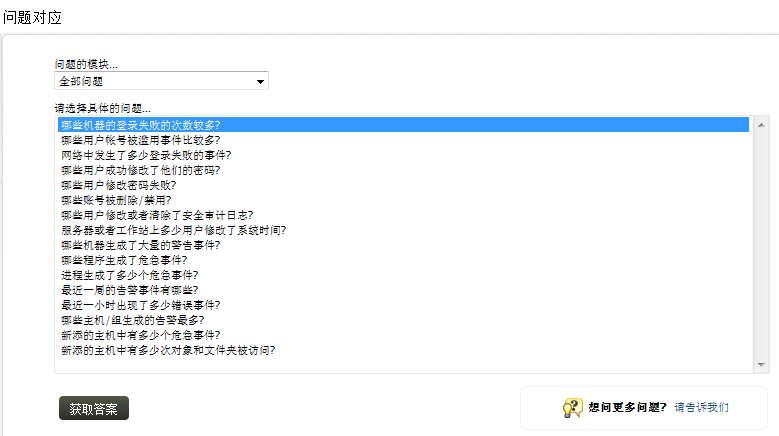
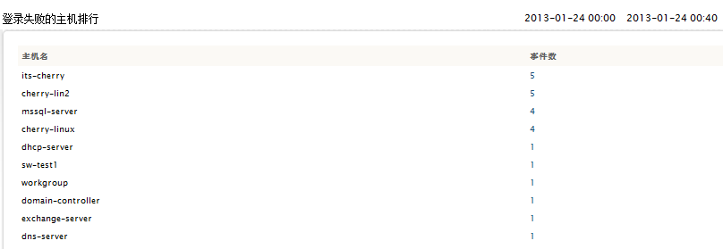

问题对应
问题对应支持管理者和其他非技术性的雇员通过简单的问题，获取到关键的网络事件。在问题对应部分，我们提供了一种便捷的方式，可以为用户快速提供需要的报表，用户不再需要创建一个新的配置文件，或通过预置的报表进行查询。
查看问题对应报表，可通过以下菜单实现：
问题对应部分显示了一系列的问题。
- 选择感兴趣的问题模块（问题分类），如登录/退出、用户、告警等。如果您不确定，那么保持默认值所有问题就可以了。
- 选择和您的需求相应的问题。
- 点击获取答案。

如果您想要在问题对应下添加更多的问题，点击请告诉我们链接。在打开的表单中，输入问题和描述，完成之后，点击发送。EventLog Analyzer的技术支持团队将会分析您的问题，如果您提供的问题有效可用，那么我们将会将它更新到下一个发布的EventLog
Analyzer版本中。
和所选问题对应的报表将会显示出来。

您可使用此标签的添加自定义问题提高这项服务的性能。
在问题对应中添加自定义问题
请参阅下面的步骤：
- 添加新问题，第一步为这个问题创建一个自定义报表，这个报表将会作为问题（报表）的答案。
- 在<EventLog Analyzer Home>/server/default/conf 目录下打开AskMe.xml文件。
- 在这个文件里，添加一个新"问题"和"链接"标签。在"问题"标签输入您的问题，在“链接”标签中输入您创建的自定义报表的URL。
- 获得自定义报表的URL：
- 在Web客户端选择自定义报表。
- 复制在浏览器地址栏中的显示的URL。
- 在"链接"标签复制此URL，删除"http://<ELA
server host:port>/event/"，并使用
&替换URL地址中的所有的&。
问题和链接标签示例：
<Question>在添加的主机中，对象和文件夹被访问了多少次？</Question>
<link>index2.do?url=topreport_details&RBBNAME=Compliance_ObjectAccess&tab=askCherry&rtype=toprep&TC=10</link>
- 保存文件
刷新Web客户端的问题对应标签，您就可以看到在底部新添加的问题已经列出。选择您添加的自定义问题，点击获得答案，将会显示与其关联的自定义报表（答案）。
 |
注意：请确保在已有的问题后添加的新问题，不会影响到已有的问题。 |
|